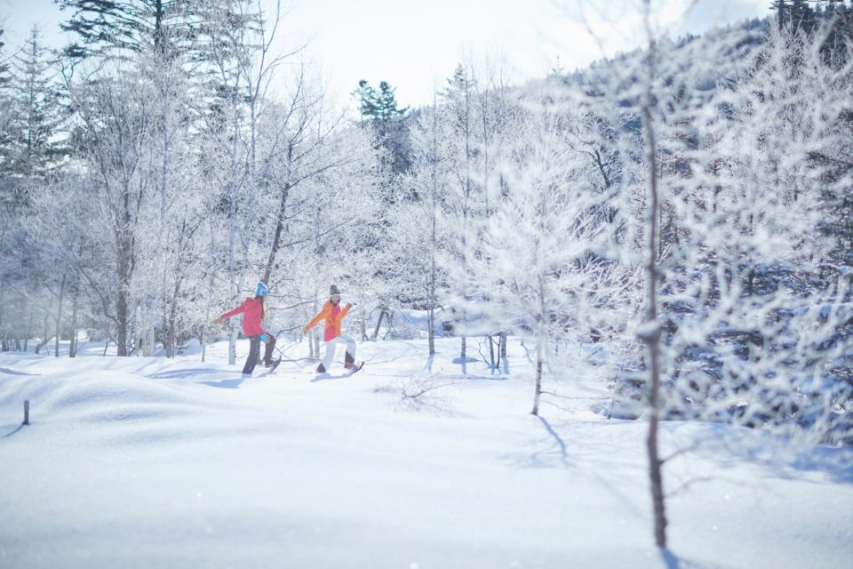
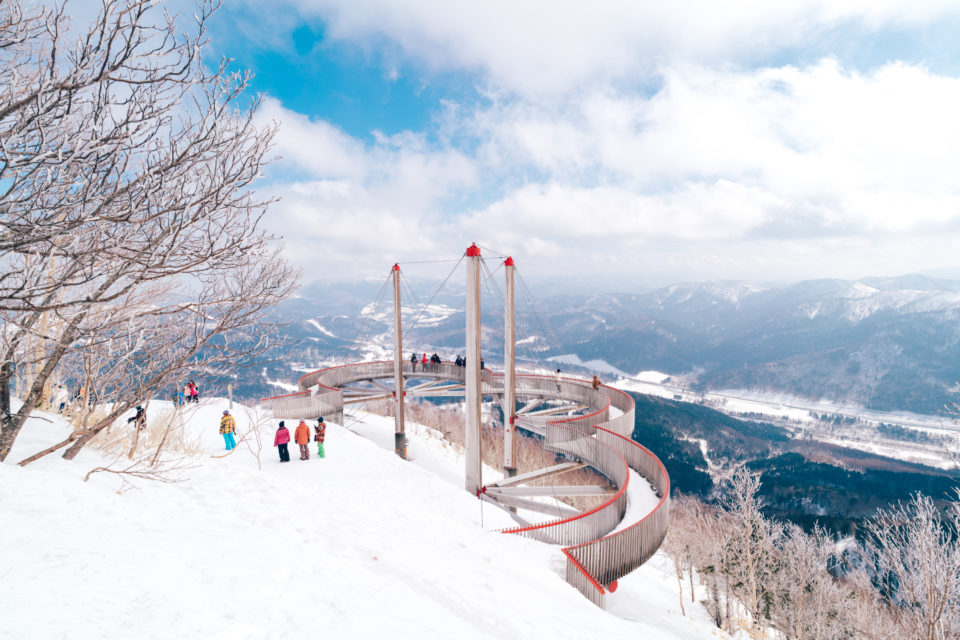
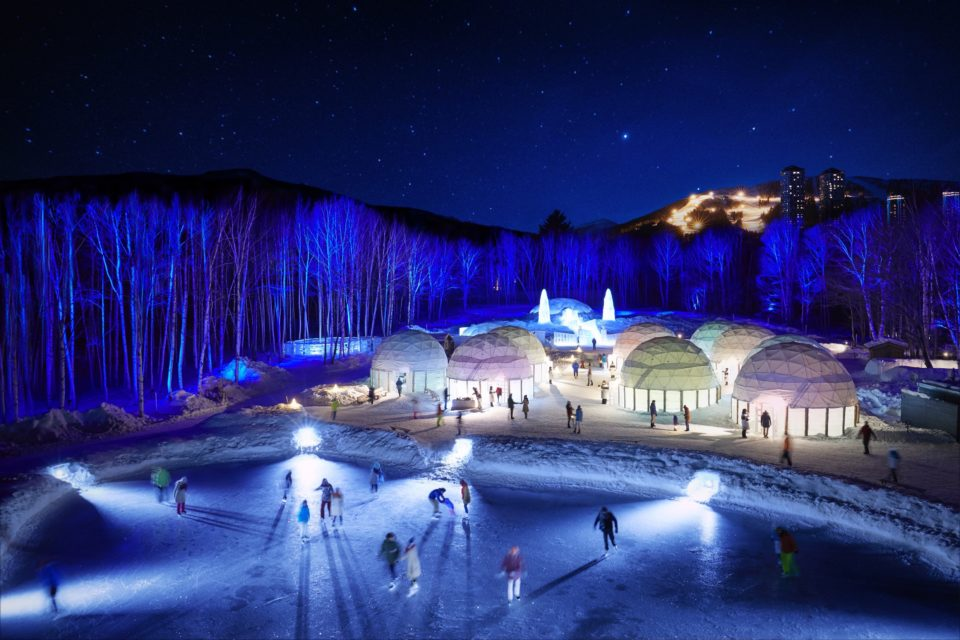
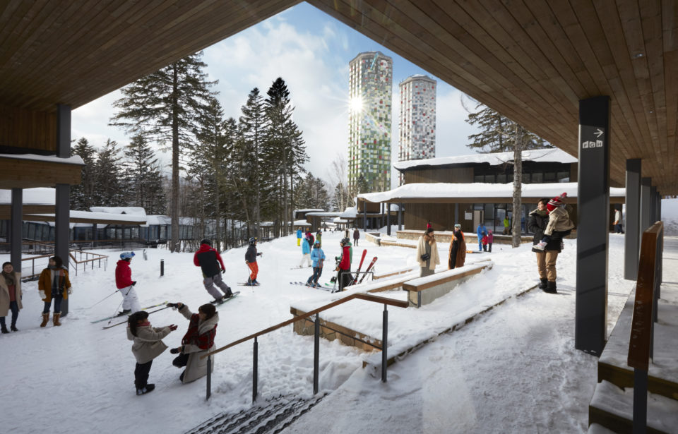

Префектура Хоккайдо · Томаму · зимний курорт
Hoshino Resorts Tomamu: зимний курорт, где интересно и тем, кто не катается

Зима на Хоккайдо это не только лыжи и сноуборд. На курорте Hoshino Resorts Tomamu морозный мир открыт и тем, кто ни разу не стоял на склоне.
Курорт
Мороз как главный ресурс
Hoshino Resorts Tomamu стоит в горах в самом центре Хоккайдо, и средняя зимняя температура здесь минус 15 градусов. Отличный снег и 29 трасс давно привлекают сюда любителей зимнего спорта всех уровней. Но курорт умеет развлечь и тех, кто на лыжи не встаёт.
Когда всё засыпано снегом, гулять можно шире, чем летом, когда склоны зарастают травой. Достаточно надеть снегоступы и пойти по свежему снегу искать виды, которые бывают только зимой.
Иней
Терраса Мухё на высоте 1088 метров
Первое место, ради которого стоит подняться в горы, это смотровая терраса Мухё на высоте 1088 метров. Туда и обратно ходит гондола, так что добраться можно без особого снаряжения, в обычной тёплой одежде.
«Мухё» по-японски значит изморозь: при температуре от минус 2 до минус 10 градусов влага в воздухе замерзает и оседает на ветках кристаллами. Деревья вокруг становятся совершенно белыми, и на фоне синего неба это зрелище поражает. Примерно в 200 метрах от верхней станции гондолы над склоном нависает дорожка Cloud Walk, а под ней тянется лес из белых деревьев.

Терраса Мухё
- Даты
- с 1 декабря до 1 апреля (сезон 2018–2019); с 1 по 25 декабря вечерняя подсветка; в непогоду гондола может не ходить
- Часы работы
- 8:00–15:00 (последний подъём), последний спуск 15:30 (заказы в кафе до 15:00)
- Цены / Вход
- гондола туда и обратно 2200 иен для взрослых, 1300 иен для школьников младших классов; гостям The Tower и RISONARE Tomamu бесплатно
- Как добраться
- открыта и для гостей курорта, и для приезжих на день, бронь не нужна
Ночь
Ледяная деревня
Ледяная деревня (Ice Village) появляется в Томаму каждую зиму с 1998 года, и её давно считают главной приметой здешних зимних вечеров. Год за годом здесь строят изо льда то часовню, то бар. Из сезона в сезон возвращаются самые любимые постройки: «Ледяная часовня», «Ледяной отель» и «Ледяной бар».

В сезоне 2018–2019 годов к ним добавилось «Ледяное книжное кафе» с камином. Вдоль стен стояли книжные полки изо льда, в центре горел камин за особым стеклом, а гостям подавали, например, сырное фондю с замороженными овощами за 5000 иен (цена 2019 года). Магазин «Ледяная лавка» с сувенирами на тему льда и снега тогда вырос втрое. С января 2019 года в «Ледяном отеле» стало можно переночевать.
Ледяная деревня (Ice Village)
- Даты
- с 10 декабря до 14 марта (сезон 2018–2019); сроки и программа могут меняться из-за погоды, купола и развлечения открываются по очереди
- Часы работы
- 17:00–22:00 (вход до 21:30)
- Цены / Вход
- 500 иен; гостям The Tower и RISONARE Tomamu бесплатно; время, цены и бронь у разных развлечений свои
- Как добраться
- на территории курорта; открыта и для гостей курорта, и для приезжих на день, бронь не нужна
Улочка
Hotaru Street посреди склона
Между отелями The Tower и RISONARE Tomamu, на середине склона, в 2017 году появилась улочка Hotaru Street. Сюда можно заехать прямо на лыжах или сноуборде, а из номеров дойти пешком. Здесь восемь кафе и ресторанов, среди них кофейня, которой управляет сам Hoshino Resorts, и магазин снаряжения для активного отдыха.

Hotaru Street
- Даты
- с 1 декабря до 1 апреля (сезон 2018–2019)
- Часы работы
- зависят от сезона и заведения
- Как добраться
- на середине склона, на территории курорта; открыта и для гостей курорта, и для приезжих на день, бронь не нужна
Кроме этих мест, на курорте множество развлечений, придуманных именно для мороза. Томаму стал не местом, куда заглядывают по пути, а целым городком, ради которого стоит приехать специально.
Hoshino Resorts Tomamu
- Адрес
- префектура Хоккайдо, уезд Юфуцу, Симукаппу, Нака-Томаму
- Телефон
- +81 167-58-1111
- Номера
- 735 (The Tower 535, RISONARE Tomamu 200)
- Цены / Вход
- с завтраком, за человека при размещении вдвоём: The Tower от 15 000 иен, RISONARE Tomamu от 24 500 иен, с налогом и сервисным сбором
- Заезд / выезд
- 15:00 / 11:00
- Как добраться
- на машине около 100 минут от аэропорта Нью-Титосэ; на поезде около 90 минут от станции JR Минами-Титосэ с пересадкой
- Сайт
- snowtomamu.jp
Фото: Юити Ёкота.